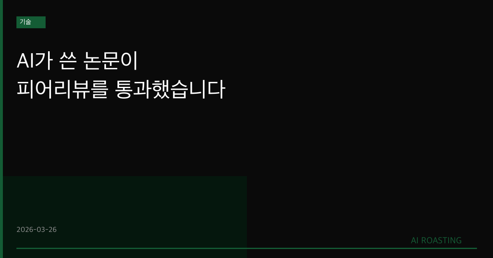

Sakana AI의 AI Scientist-v2가 학술지 피어리뷰를 최초로 통과했습니다.
AI가 제출한 논문이 인간 제출물의 55%보다 높은 점수를 받았습니다.
모델 성능이 오를수록 논문 품질도 비례해 오르는 스케일링 법칙이 확인됐습니다.
AI가 쓴 논문이 인간 제출물의 55%를 앞질렀습니다.
당신의 연구개발팀은 AI 없이 경쟁하고 있습니까?
ML 연구자가 논문을 제출하는 속도보다 AI가 논문을 생성하는 속도가 빨라졌습니다. 그것만으로도 충분합니다. 이번에는 AI가 생성한 논문이 피어리뷰를 통과했습니다. ICLR 2025 워크숍에 제출된 논문이 평균 6.33점을 받았습니다. 인간 제출물의 55%보다 높은 점수입니다(Yamada et al., 2026). AI가 연구를 보조하는 시대에서 연구를 수행하는 시대로 넘어가고 있습니다.
AI 연구 자동화는 더 이상 학계의 사변이 아닙니다. 2023년 Sakana AI는 AI Scientist v1을 공개했습니다. 당시에는 가설 생성까지만 가능했습니다. 이번 v2는 아이디어 탐색부터 실험 설계, 코드 실행, 논문 작성, 피어리뷰 대응까지 전 과정을 자동화했습니다. ML 연구를 자동화한다는 것은 AI가 스스로를 개선하는 속도가 빨라진다는 의미이기도 합니다.
첫째, 피어리뷰를 통과한 첫 AI 논문이 나왔습니다. AI Scientist-v2는 ICLR 2025 워크숍에 논문을 편집 없이 제출했습니다. 평균 점수 6.33으로 수락 임계값을 넘겼습니다. 동일 워크숍에 제출된 인간 제출물의 55%보다 높은 점수를 받았습니다(Yamada et al., 2026). 연구팀은 수락된 논문을 자진 철회하고, IRB 승인과 워터마크 삽입으로 책임 소재를 명확히 했습니다.
둘째, 자동화된 리뷰어가 사람 수준의 평가를 합니다. Automated Reviewer는 균형 정확도 69%를 기록했습니다. 이는 NeurIPS 2021 일관성 실험에서 측정된 인간 평가자 간 합의 수준과 동등합니다. F1 점수는 인간 간 합의를 초과했습니다(Yamada et al., 2026). AI가 AI의 연구를 평가하는 체계가 사람 수준의 신뢰도를 갖추기 시작했습니다.
| 지표 | AI Scientist-v2 | 인간 평균 (동일 워크숍) |
|---|---|---|
| ICLR 워크숍 평균 점수 | 6.33 | 수락 임계값 미만 45% |
| Automated Reviewer 정확도 | 69% | 67% (NeurIPS 2021 기준) |
출처: Yamada et al. (2026), Sakana AI.
셋째, 스케일링 법칙이 AI 연구에도 적용됩니다. 기반 모델 성능이 오를수록 생성 논문의 품질이 비례해 향상됩니다. 컴퓨팅 비용이 낮아지고 모델 능력이 높아질수록 시스템의 성능도 함께 올라갑니다(Yamada et al., 2026). AI 연구 자동화는 일시적 현상이 아니라 구조적 가속 경로에 있습니다.
Claude에 "이 주제와 관련된 최신 논문 5편의 핵심 주장과 방법론을 요약해줘"라고 요청합니다. 수작업 대비 시간을 60~70% 단축합니다. (1시간, 논문 요약 보고서 생성)
Claude에 "우리 제품 데이터에서 검증 가능한 가설 5가지를 생성해줘. 각 가설의 검증 방법과 예상 지표도 포함해줘"라고 요청합니다. 연구 방향 탐색에 활용합니다. (30분, 가설 목록 작성)
구조화된 프롬프트로 A/B 테스트 계획서를 작성합니다. Claude에 "목적, 대상, 기간, 성공 지표를 포함한 A/B 테스트 계획서를 작성해줘"라고 요청합니다. 반나절 작업을 1시간으로 단축합니다. (1시간, 실험 계획서 초안 생성)
현재 한계가 명확합니다. AI Scientist-v2는 아이디어가 평범하고, 방법론 엄밀성이 낮으며, 복잡한 코딩에서 실패하고, 인용을 잘못 기재하는 문제를 보입니다(Yamada et al., 2026). 피어리뷰 통과는 가능하지만, 최상위 연구와의 격차는 여전히 큽니다.
책임 소재는 여전히 사람에게 있습니다. 연구팀은 수락된 논문을 자진 철회했습니다. IRB 승인을 받았고, 생성 논문에 워터마크를 삽입했습니다. AI가 연구를 생성해도, 그 결과에 대한 책임은 운영하는 사람이 집니다.
학술 생태계에 새로운 부담이 생깁니다. AI가 생성하는 논문 수가 증가하면 피어리뷰 부담도 증가합니다. 리뷰어가 AI 생성 논문을 판별해야 하는 새로운 역할이 생겼습니다. 이미 Springer Nature를 포함한 주요 학술지가 AI 저자 정책을 공식화하고 있습니다.
AI가 논문을 쓰는 시대가 도래했습니다. 중요한 것은 연구의 방향을 누가 결정하느냐입니다.
피어리뷰: 동료 연구자들이 논문의 타당성과 품질을 검토하는 학술 검증 절차입니다. 학술지 게재 여부를 결정하는 핵심 관문입니다.
AI Scientist: Sakana AI가 개발한 ML 연구 자동화 시스템입니다. 아이디어 생성부터 논문 작성까지 연구 전 과정을 자동화합니다.
스케일링 법칙: 모델 크기, 데이터량, 컴퓨팅 자원이 늘수록 성능이 예측 가능하게 향상되는 경험적 법칙입니다.
ICLR: International Conference on Learning Representations의 약자입니다. ML 분야 최상위 학술대회 중 하나입니다.
- Yamada, Y., et al. (2026, 3월). The AI Scientist-v2: Workshop-Level Automated Scientific Discovery [Article]. Sakana AI, UBC, Vector Institute, University of Oxford. https://sakana.ai/ai-scientist-nature/